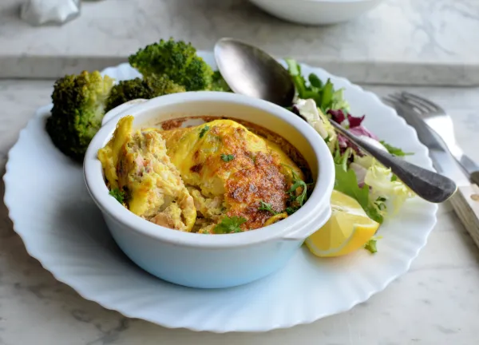

Salmon and spring onions gratins
Introduction

This is a low calorie, light and healthy comfort meal. Made with common staple ingredients like canned salmon, spring onions and eggs. I chose this recipe since I've gotten more into more of a low calorie, high protein diet, and this recipe is amazing for it. I also personally love spring onions and salmon. Here is the original recipe.
Ingredients

- 200g pink salmon (drained, skinned, and boned)
- 2 spring onions (trimmed and finely sliced)
- 4 small eggs
- Juice of ½ lemon
- Sea salt and black pepper to taste
- Low-fat spray oil
Instructions
- Pre-heat your oven to 180°C / 375°F.
- Grease two small, oven-proof dishes with the low-fat spray oil.
- Whisk the eggs in a bowl, season with salt and pepper, and stir in the lemon juice and sliced spring onions.
- Mash the drained salmon, gently fold it into the egg mixture, and spoon it into your prepared dishes.
- Bake for 20 to 25 minutes until the gratins are puffed up, golden brown, and firm to the touch.